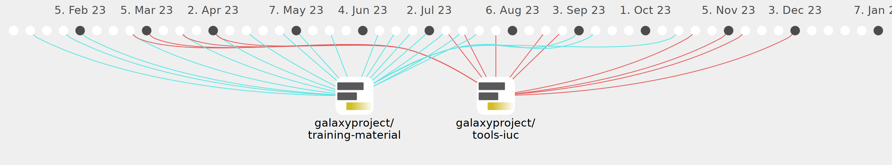

bebatut

Commits all-time: 2691
Commits last year: 94

(70)
- f110e38
- 93c0096
- f3aca7a
- f4ef3cb
- a7b40fa
- bdb2f5e
- e7ec340
- b165b6f
- e7c7c84
- feb5896
- e3d9017
- 1cc23e8
- f524f96
- 78a1ff3
- 6597861
- 8d59558
- f3fa300
- 80e5864
- 2fd480c
- 1a80956
- dd66306
- ef796ff
- 2951580
- 7b01017
- eeb310c
- e26c12d
- 5885add
- 9393a09
- a6bd545
- 978cc30
- 7a51f34
- 93de6f5
- ff82fa2
- 5903eec
- 55ad6a1
- e7a8614
- 62f2055
- 01d6a4a
- be7ecdc
- 19c0247
- 577c8e0
- 850c03a
- f933dc6
- f39ccfe
- 779e9d0
- e877e88
- 4cfeb68
- 46a1653
- db91fd9
- e82eba9
- 562ebb0
- 6e7b51c
- b534738
- 21b38b8
- 27a3393
- 26715af
- 6bdbd4c
- 9720579
- dca839d
- b94282c
- 643500e
- fb40c49
- 0c94f34
- 12ffab5
- dd6589f
- 33cedc1
- 7697021
- f63c196
- ef12aec
- afc517d
(24)